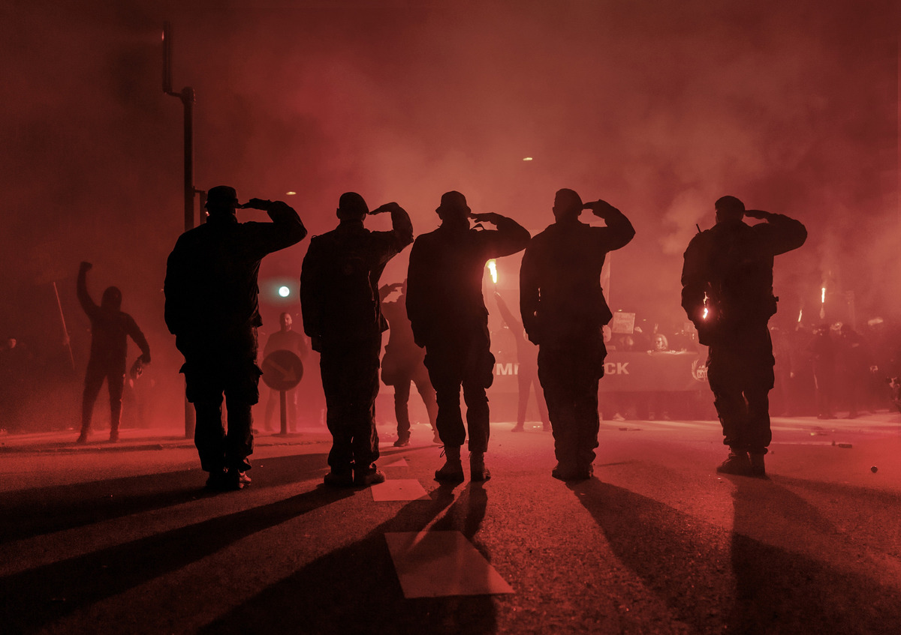

MEN IN BLACK

Beskrivelse:
Tilhængere af Men In Black kalder sig selv for frihedskæmpere, mens kritikere bekymrer sig om deres aggressive facon. Klædt i sort og bevæbnet med fyrværkeri har gruppen i år arrangeret højlydte demonstrationer, der har ført til voldelige sammenstød mellem politi og demonstranter. Men In Black opstod under coronanedlukningen som en protest mod regeringens restriktioner og er blevet et samlingspunkt for coronaskeptiske danskere. Flere deltagere iklædte sig Forsvarets uniformer under Men In Blacks demonstrationer. Det kulminerede i år, da en håndfuld uniformerede deltagere med militær baggrund udførte en eksercits under en demonstration den 10. april 2021. Forsvaret har officielt taget afstand fra deltagelsen, “da det ikke foreneligt med Forsvarets værdier.”
⬇⬇⬇
Det Minder Mig om Call of Duty: THATS IT!!!
caca
caca